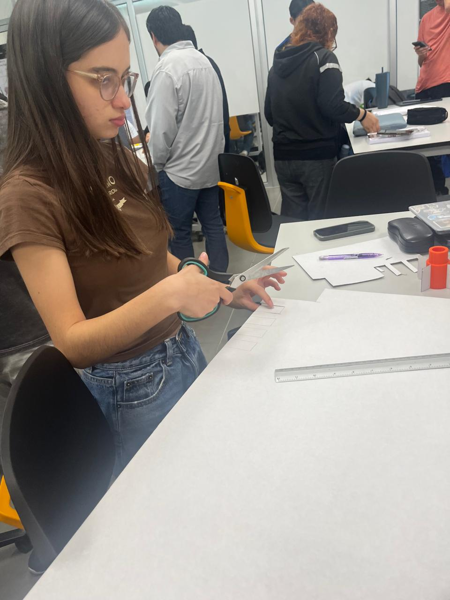
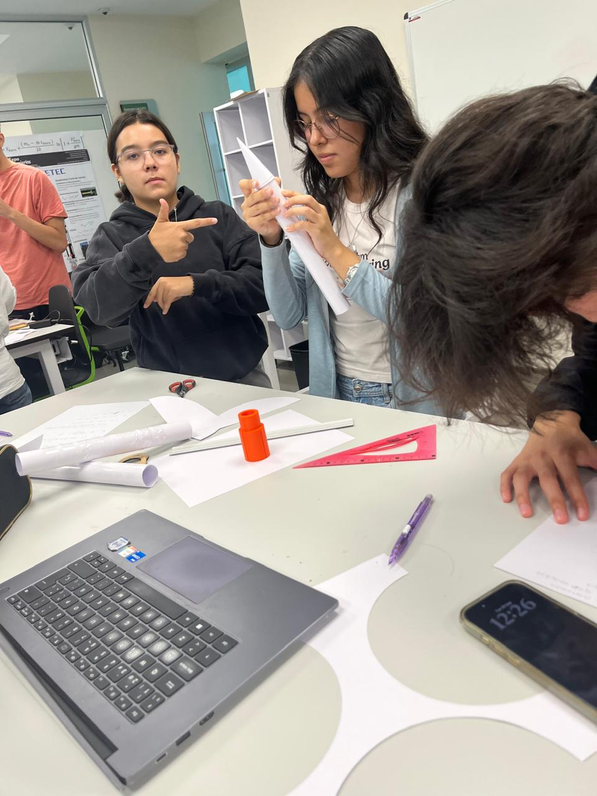
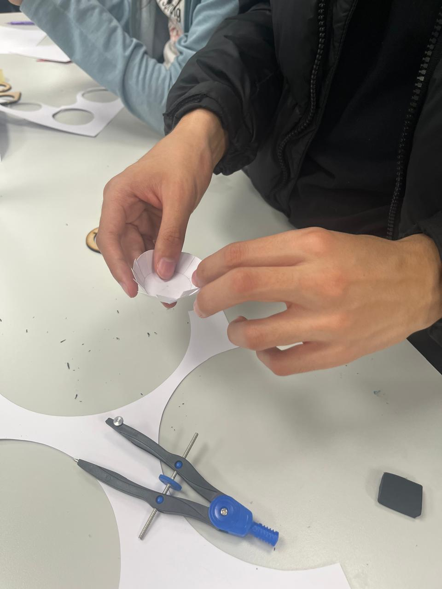
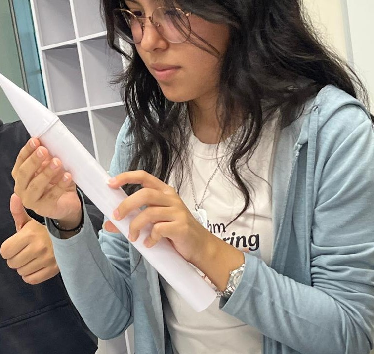

Actividad 1
29 / 09 / 2026
Construcción de los primeros cohetes
Con los materiales indicados por el profesor, armamos 3 cohetes y dos bases de prueba. Usamos opalinas, cascarón de huevo, cinta y una pieza de impreción 3D poporcionada por el laboratorio.
Trabajo en equipo
Michelle se encargó de el cuerpo de los cohetes, Hannah de las puntas cónicas, Gabriel armó las tapas circulares, Valeria dibujó y recortó las aletas, y Regina tomó evidencias de la actividad.
Inicios de la bitácora
Desde esta actividad Regina comenzó el sitio web de la empresa
Evidencias



